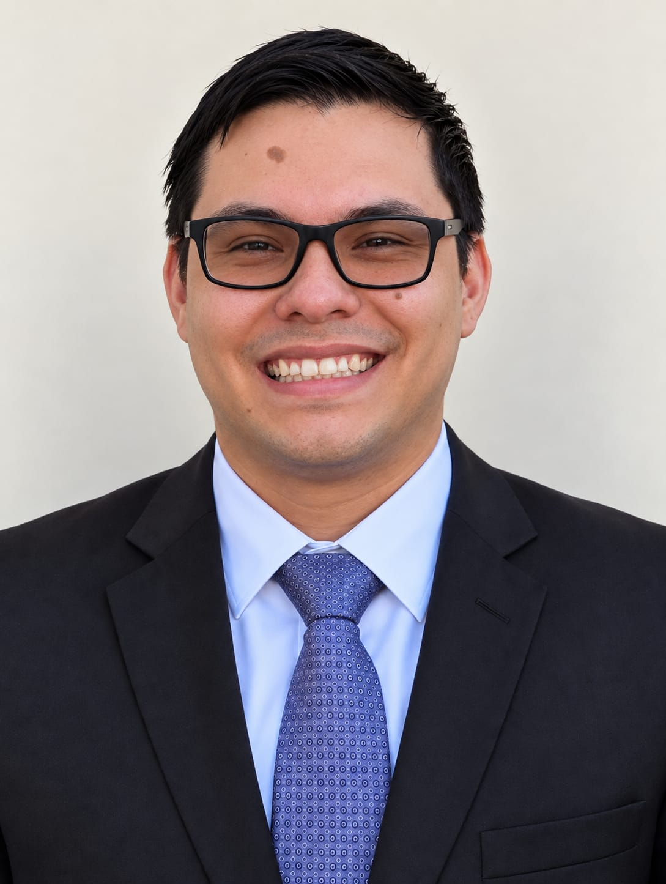

Ivan Carreño| WDD 130

Olá! Meu nome é Ivan Carreño, sou da Venezuela, de uma linda ilha chamada Margarita. Atualmente moro em São Paulo e já vivo no Brasil há 5 anos. Moro com minha família, minha esposa e meu filho de 8 anos. Sou apaixonado pela área de tecnologia e gosto muito de aprender e descobrir coisas novas relacionadas a esse universo. Tudo o que envolve tecnologia desperta meu interesse e minha curiosidade. Desde muito jovem sempre tive interesse em computadores, eletrônica e em entender como as coisas funcionam. Com o passar do tempo, esse interesse aumentou e comecei a explorar diferentes áreas da tecnologia, principalmente programação e desenvolvimento de sistemas. Gosto de enfrentar desafios, pesquisar soluções e aprender por conta própria. Também considero muito importante continuar estudando e desenvolvendo novas habilidades, porque a tecnologia está sempre mudando.